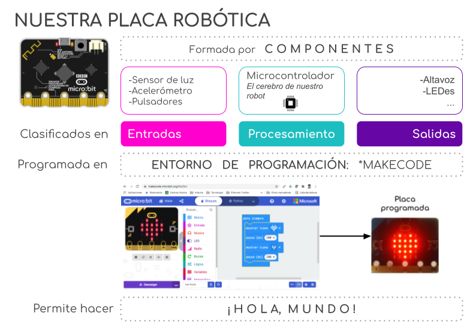
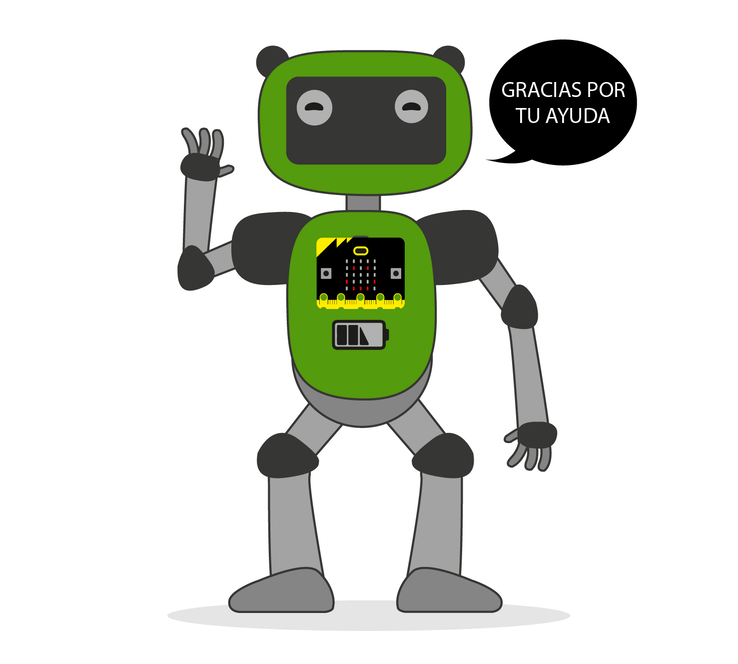

Una vez hemos terminado la tarea es momento de reflexionar sobre qué hemos aprendido.
Seguro que te ha quedado más claro qué son los robots, cómo perciben la realidad, cómo “piensan” y cómo responden al entorno.
El siguiente esquema puede servirnos para ver que hemos trabajado en la tarea.

1. ¿Qué he aprendido?
En este último paso te voy a proponer que pienses en qué ha sido lo más importante de todo lo que has aprendido para conseguir el reto que te proponíamos.
Lo que descubras pensando en ello te servirá para cuando tengas que alcanzar retos parecidos en un futuro.
¡Para un momento y completa el PASO 4 de tu Diario de aprendizaje (¿Qué he aprendido?)!
Recuerda:
- Pregunta a tu profesor o profesora si la rellenarás en papel o en el ordenador.
- Si la rellenas en el ordenador, ¡no te olvides de guardarla en tu ordenador cuando la termines!
¡Ánimo, que lo harás genial!
2. Para finalizar
Para concluir, vamos a recordar la estrategia o el “truco” que has aprendido durante este reto.
Esta estrategia o “truco” te lo enseñamos y lo trabajaste en el apartado 5 de la página 3.2 El cerebro de nuestro robot . Vuelve a dicho apartado y repasa un momento en qué consistía y cómo te sirvió para llegar a conseguir el reto que te proponíamos.
Abre, ahora, el Diario de Aprendizaje y completa su última página.
En este apartado guardarás información valiosa sobre la estrategia, en qué actividades las has aplicado, si ha sido útil y qué te ha resultado más difícil.
¡Sigue trabajando así! ¡Lo estás haciendo genial!
Por tu esfuerzo has conseguido aquí la primera insignia que te acreditará como Mega-Estratega. ¡Enhorabuena!
Recuerda:
- Pregunta a tu profesor o profesora si la rellenarás en papel o en el ordenador.
- Si la rellenas en el ordenador, ¡no te olvides de guardarla en tu ordenador cuando la termines!
3. ¿Qué has conseguido?
Realiza una autoevaluación para comprobar lo que has aprendido y conseguido durante la realización del proyecto.
| Excelente | Satisfactorio | Mejorable | Insuficiente | |
|---|---|---|---|---|
| He identificado los componentes de la placa | Lo he hecho de manera autónoma (1) | Lo he hecho pero he necesitado ayuda (0.75) | Lo he hecho, pero he necesitado una guía continua (0.5) | No he podido hacerlo (0.25) |
| Sé clasificar en entradas/ procesamiento/ salidas los componentes de la placa | Lo he hecho de manera autónoma (1) | Lo he hecho pero he necesitado ayuda (0.75) | Lo he hecho, pero he necesitado una guía continua (0.5) | No he podido hacerlo (0.25) |
| Reconozco la importancia de los microcontroladores en la sociedad actual | Sería capaz de explicarlo (1) | Lo he entendido y sabría explicarlo con ayuda (0.75) | Lo he entendido pero no sabría explicarlo (0.5) | No lo he entendido (0.25) |
| Sé qué son y cómo funcionan los microcontroladores | Sería capaz de explicarlo (1) | Lo he entendido y sabría explicarlo con ayuda (0.75) | Lo he entendido pero no sabría explicarlo (0.5) | No lo he entendido (0.25) |
| Conozco y valoro las ventajas de las tecnologías abiertas | Sería capaz de explicarlo (1) | Lo he entendido y sabría explicarlo con ayuda (0.75) | Lo he entendido pero no sabría explicarlo (0.5) | No lo he entendido (0.25) |
| Se identificar las diferentes partes en las que se divide el entorno de programación | Sería capaz de explicarlo (1) | Lo he entendido y sabría explicarlo con ayuda (0.75) | Lo he hecho, pero he necesitado una guía continua (0.5) | No lo he entendido (0.25) |
| He programado un ¡Hola mundo! en mi placa | Lo he hecho de manera autónoma (1) | Lo he hecho pero he necesitado ayuda (0.75) | Lo he hecho, pero he necesitado una guía continua (0.5) | No he podido hacerlo (0.25) |
| Sé cuál es la utilidad del programa ¡Hola Mundo! | Sería capaz de explicarlo (1) | Lo he entendido y sabría explicarlo con ayuda (0.75) | Lo he entendido pero no sabría explicarlo (0.5) | No lo he entendido (0.25) |
| He realizado un programa interactivo | Lo he hecho de manera autónoma (1) | Lo he hecho pero he necesitado ayuda (0.75) | Lo he hecho, pero he necesitado una guía continua | No he podido hacerlo (0.25) |
| Sé qué es un robot y cómo se relacionan con el entorno | Sería capaz de explicarlo (1) | Lo he entendido y sabría explicarlo con ayuda (0.75) | Lo he entendido pero no sabría explicarlo (0.5) | No lo he entendido (0.25) |
| He realizado un programa que permite comprobar que la placa robótica funciona correctamente | Lo he hecho de manera autónoma (1) | Lo he hecho pero he necesitado ayuda (0.75) | Lo he hecho, pero he necesitado una guía continua (0.5) | No he podido hacerlo (0.25) |
| Preparación de la exposición | Lo he hecho de manera autónoma (1) | Lo he hecho pero he necesitado ayuda (0.75) | Lo he hecho, pero he necesitado una guía continua (0.5) | No he podido hacerlo (0.25) |
| Ejecución de la exposición | He sido capaz de explicarlo todo de forma coherente (1) | He sido capaz de explicarlo, pero he improvisado y ha faltado información (0.75) | Lo he explicado, pero he necesitado ayuda continua (0.5) | No he sido capaz de explicarlo (0.25) |
- Actividad
- Nombre
- Fecha
- Puntuación
- Notas
- Reiniciar
- Imprimir
- Aplicar
- Ventana nueva
Motus dice ¿Te ha resultado interesante?
¿Te ha parecido interesante todo lo que has aprendido en este REA? ¿Cómo te has sentido? ¿Por qué? ¿Estás satisfecho con el programa final que has realizado?
Seguro que algunas cosas te han resultado fáciles y otras han sido más difíciles, no pasa nada; estoy convencido de que con tu esfuerzo y con la ayuda de tus compañeros, compañeras y profes, habrás aprendido muchas cosas nuevas; así que...¡enhorabuena!, porque además has conseguido devolverle la vida a tu robot. ¡Seguro que te estará siempre muy agradecido!
